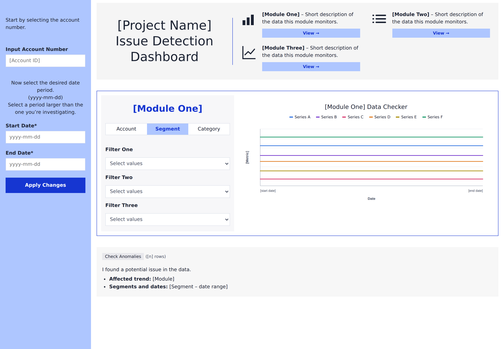
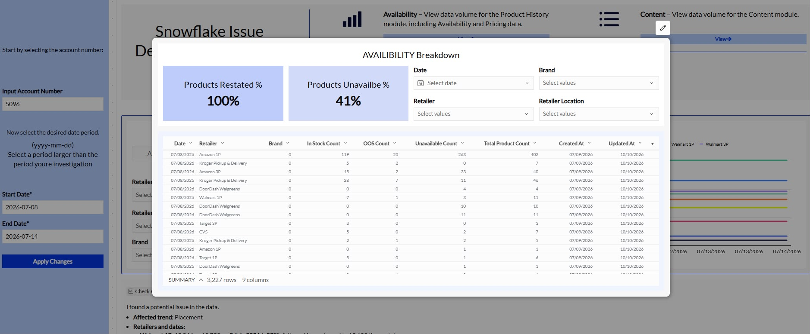

Case study · Internal tool
Data Issue Detection Dashboard
A self-serve data quality tool built on parameterised Snowflake SQL, a BI dashboard and an AI agent. Any team can confirm a data issue in seconds and route it to the right owner.

The problem
Every suspected data bug went to analytics first. An analyst had to confirm it was a data issue before the right team was told, which took hours.
The solution
Parameterised Snowflake queries surface data issues as spikes and drops in a self-serve dashboard, with an AI agent guiding users from detection to a ticket.
The result
Teams raise tickets directly with the right owner. Issues are raised and resolved at least 50% faster, and weekly tickets fell from 30 to 4.
Drill into the detail

Architecture
- 1 · ProfileSource data
Identified the gaps, abnormalities and duplications that cause data issues.
- 2 · ModelSnowflake SQL
Star-schema queries aggregate to daily counts, so defects show as spikes and drops.
- 3 · ParameteriseOne template
Account, start date and end date placeholders let the same queries serve every client.
- 4 · VisualiseBI dashboard
Connected directly to Snowflake. The only inputs are an account number and a date range.
- 5 · AssistAI agent
An orchestrated prompt flags spikes and drops, then guides ticket creation once the user has verified against the source of truth.
SQL techniques
Star-schema joins
Fact tables joined to date, retailer, brand and product dimensions.
Composite-key joins
Joins on product and retailer keys, so products sold at several retailers are not double-counted.
Conditional aggregation
COUNT(DISTINCT CASE WHEN ... END) pivots row states into columns, such as in stock, out of stock and unavailable.
Distinct counting
Counts unique products or keyword-product pairs, not raw rows.
Daily time series
Grain of date, retailer and retailer location, so results can be trended and drilled into.
Ownership-based scoping
Filters to the client's own brands with ARRAY_CONTAINS.
Visibility flag
Turns search placement into a binary Page 1 flag, measuring visibility rather than exact position.
Freshness and lineage
MIN(created_at) and MAX(updated_at) show when data landed and was last refreshed.
Multi-tenant parameters
Account, start date and end date placeholders let one template serve any client.
-- Daily availability by retailer for one client and period
SELECT
d.calendar_date,
r.retailer_name,
r.retailer_location,
COUNT(DISTINCT CASE WHEN f.stock_status = 'IN_STOCK' THEN f.product_key END) AS in_stock,
COUNT(DISTINCT CASE WHEN f.stock_status = 'OUT_OF_STOCK' THEN f.product_key END) AS out_of_stock,
COUNT(DISTINCT CASE WHEN f.stock_status = 'UNAVAILABLE' THEN f.product_key END) AS unavailable,
COUNT(DISTINCT f.product_key) AS total_products,
MIN(f.created_at) AS first_created,
MAX(f.updated_at) AS last_updated
FROM fact_product_history f
JOIN dim_date d ON d.date_key = f.date_key
JOIN dim_retailer r ON r.retailer_key = f.retailer_key
JOIN dim_product p ON p.product_key = f.product_key
AND p.retailer_key = f.retailer_key -- composite key: no double-counting
JOIN dim_brand b ON b.brand_key = p.brand_key
WHERE f.account_id = {{account}} -- placeholders: one template, any client
AND d.calendar_date BETWEEN {{start_date}} AND {{end_date}}
AND ARRAY_CONTAINS({{manufacturer}}::VARIANT, b.brand_owners) -- client's own brands only
GROUP BY d.calendar_date, r.retailer_name, r.retailer_location
ORDER BY d.calendar_date;